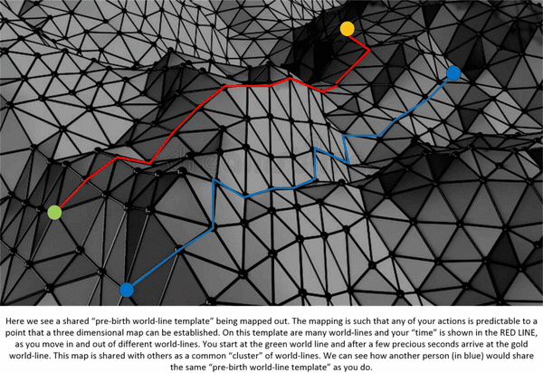
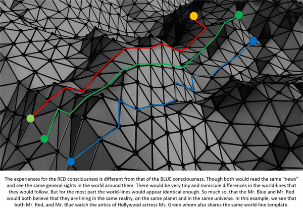
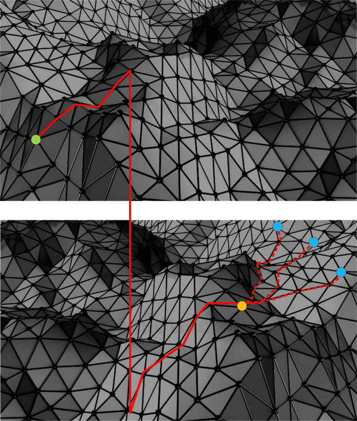
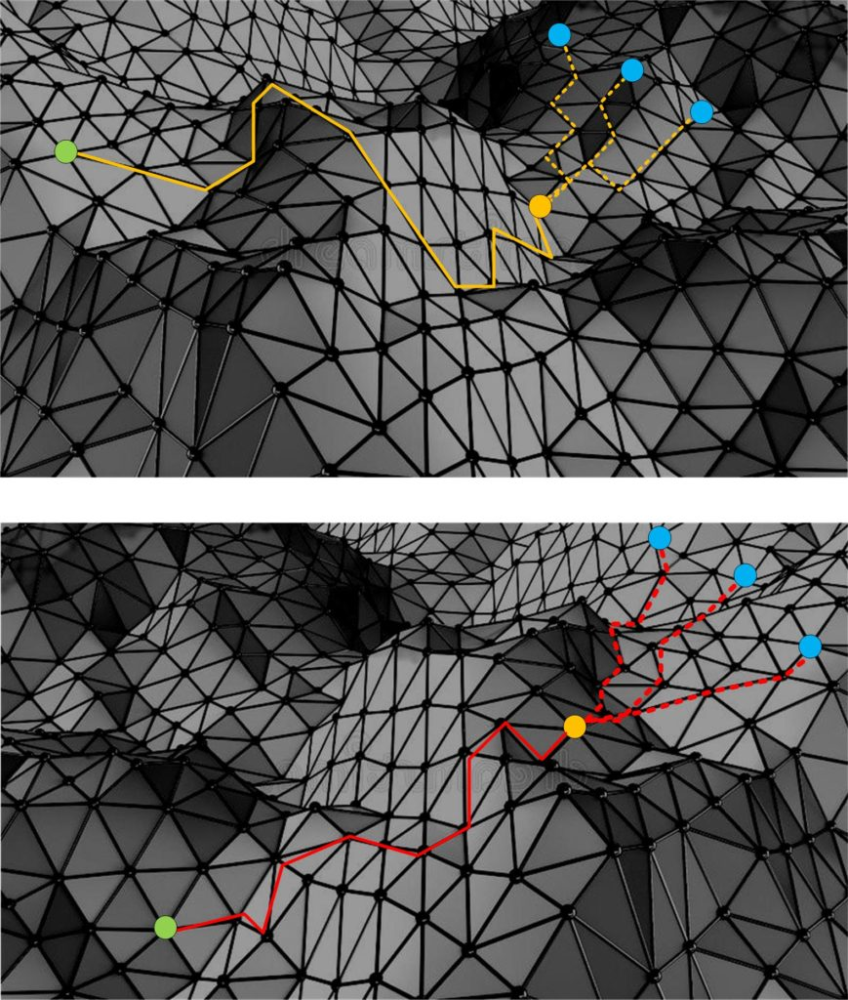

Remote viewing is defined as the ability to acquire accurate information about a distant or non-local place, person or event without using your physical senses or any other obvious means. It’s associated with the idea of clairvoyance, seemingly being able to spontaneously know something without actually knowing how you got the information. It is also sometimes called “anomalous cognition” or “second sight.” Many of us experience this from time to time as an intuitive flash of insight that turns out to be correct. Many well-known entrepreneurs and business people, like George Soros, Conrad Hilton, Thomas Alva Edison and Akio Morita, the co-founder of Sony, have attributed their business success to this ability. And we’ve all seen natural psychics perform seemingly amazing feats of mental skill on TV. The difference between natural psychic receptivity and remote viewing is that the latter is a trained skill, a controlled process, that the average person can learn to do, to some degree or another. -Gaia
This post covers remote viewing of the future and how it works. But instead of saying that remote viewing of the future is a glimpse of the shared universe, we look at it in it’s true state. For the “shared universe” is really the MWI. And thus you have a quandary. If you are on a world-line following your own specific paths, and you read about someone remote viewing the future, is it accurate?
- Does the remote viewing of their extrapolated future, have meaning for you?
- And, how can you know anything at all about their extrapolated future when you are on your very own personal world-line?
- What is the mechanism for observing world-line futures?
Well, here in this post we will look at all these elements and more. So this post will enable the reader to obtain a far better understanding of our universe, and the abilities that we have and hold within it.
First off…
What is the Mechanism for observing world-line futures?
It’s pretty much understood that certain people have “tapped” into our reality and have trained themselves to observe things and relate these things to others. It’s known as “Remote Viewing”. There is not too much that I can add to this, except to lay out the general mechanism(s) involved.
- Thoughts control our reality.
- By awareness, and training, one is able to see, and track what our reality is.
- This might manifest in all kinds of abilities that go by the labels of ESP and PSI.
You can pretty much INDIVIDUALLY see what your own future holds by [1] adding affirmations that state that ability and that allow your to learn and cultivate it, and [2] try using any of the well publicized techniques of remote viewing yourself.
I have done both.
But I do not use it very often at all.
The reason is this…
Remote Viewing of my death
I used both techniques [1 & 2] above to view what would happen in my future.
The year was 2005 and I was going through a remarkable time. My mother died, I went through a divorce, there was a fight over her estate, and I was caught up in the middle of it, I lost my job, my car, my house, and my pets. And then I was retired from MAJestic.
I went though a serious crisis after crisis and I was fearful of my future as everyone was telling me what to expect once I entered retirement…
I fully expected to be hurt seriously, and killed as part of MAJestic. It was not an idle concern. I knew from <redacted> . Certainly there was a couple of attempts along these lines (I haven’t written about them, yet) And I was literally shaking all day and everyday.
Once the papers got the news that I was being arrested as a Sex Offender, all hell broke out. And the vast amount of hatred and disgust poured into my life. People were driving by my house, and stopping and looking it over. People started to follow me. I even caught a guy with a can of gasoline trying to break into my back door.
I was at a low point.
The fear was eating me alive.
And so I added these affirmations. I specifically asked for direction, calmness, solutions and starting points.
Answers started to flow into my consciousness…
- Go to a counselor.
- Have a doctor look at my shaking, fear, and upset.
- Realize that my possessions are only things.
- My mother’s time was over. It had nothing to do with me.
- The divorce was part of MAJestic retirement.
- I had to be retired. I was considered “dangerous”.
- Do not fight the retirement, accept it and focus on the objectives.
- Don’t flee.
- Migrate what remaining assets I had outside the country.
- Focus on reestablishing my friendships and community in China.
- The retirement will be short, and then I can move to China.
Finally…
- I “saw” my death.
I was thin, and looked like I was in my 90’s. I was in a hospital bed in a very modern hospital. I had two or three others in my room looking at me, and I expired peacefully. Calmly. Smoothly. Like drifting off into luke-warm water.
This image.
This image was all that I really needed to have. It told me that no matter what I was going to go through, that I would go through it and survive. i would be fine and die an old man being taken cared for and surrounded with people who cared for me.
And that was all I needed.
To understand how remote viewing works you need to understand how our “reality universe works”…
As I have repeatedly stated, [1] we are consciousness.
We are NOT a body.
Further, [2] our consciousness enters a specific singular world-line. Usually empty and devoid of other “active” consciousnesses.
We do not share a “place” inside a universe with others.
And [3] it appears that we share things because billions of years of thoughts have created an underlying “template” that all the world-lines feed off of.
But…
It’s [4] not a singular template. Wildly divergent thoughts and actions have created multiple “template(s)”.
And thus when your consciousness enters a body on the earth, you are positioned upon one of a multitude of templates.
This template is the “pre-birth world-line template”.
A starting point
A “pre-birth world-line template” is the starting point that the consciousness uses when it enters the earth reality to obtain experiences. It is a point in “time”. It is a spatial location. And it comes with a “map” of the highest-probability world-lines for the “passage of time”.
This template is called a “template” because it is used by other consciousness’s as well. There are many, many such templates. And, as such, many, many, such maps.
What a map is, is a cluster of “highest probability” outcomes of the decision process for a given consciousness.
- If your routine is to drink coffee with toast in the morning, it would be a point on the map.
- Jumping out the window and killing a chicken and eating it for breakfast is a possibility, but a remote one. Thus it is not on the map.
- To get to that remote possibility, you need to “slide” off the map onto another world-line template map.
- The map is a display of the “highest probability” world-lines that your thoughts will generate for you.
It is (often) mapped out on the MWI in the form of a 3-D (three dimensional map). With the “lessons a soul can learn” (also known as hardships or entropy) mapped in the Y-axis. And it would appear to us (observing the map) as highs and lows; as mountains or valleys.
Of course, the newbie might think that since changes and feelings change on a moment to moment basis, then the basic map would change as well. Well, that is false. We only believe that we have control over our thoughts and the generation of the world-lines. In all actuality we do not. We are like sheets in the wind and our thoughts are predictable based upon the stimuli that our consciousness experiences in any given world-line.
In the image below, we see two individuals that share the same pre-birth world-line templates. They MAP is identical for each, but the path that they take is different. (This is a rather extreme simplification, but it is a useful exercise.) Notice that they both use the same pre-birth world-line template. Thus, they both “understand” each other. Notice that they make different decisions within the same template, but the decisions make sense to each other.

Because [1] they use the SAME “pre-birth world-line template”, and that [2] both of them follow the same predictive pathways within the MAP, we can say that both Mr. Red and Mr. Blue’s world-lines are “clustered together”.
- You can be on the same map and cluster together.
- But also different maps can also cluster together if their thoughts are similar enough.
As such, while they are on different individual world-lines they might share the same sights that each observes. They might watch the same birds flying in the sky or the same mountains in the distance. And they might observe the same things that other people who use the same “pre-birth world-line template” do. As in this example…

Here we can see that all three individuals are using [1] the same “pre-birth world-line template”, and [2] the same map, and [3] are all clustered together.
The Pre-Birth World-Line Template is THE MOST IMPORTANT aspect of your life upon the earth. No matter what decisions or thoughts that you have, this template is the foundation from which they derive from. This is the starting point; the initial conditions that your consciousness uses when it thinks and makes decisions and initializes physical actions.
And while you can move away using world-line travel, and strange and unexpected behaviors, and even slide off the world-line map into new, strange and unexpected maps (and their associated world-lines), the basic “programming” of your physical body will remain intact. You will always have the “pre-birth world-line template” influence in your life.
So stop that idea that once you are on a new world-line that everything is fresh and new. It isn’t. It’s just a continuation of your “passage of time” as it “hauls about a large line of experiences behind it”.
But…
Is it possible to predict the future using Remote Viewing in the MWI?
Well, the answer to this is YES it is.
However the future that you (or the person making the remote viewing activity) is able to predict is your own shared template, and shared map. If you are not on a shared map then the predictions would have very little relevance to you.
Here’s an example.
Let’s suppose that you have been [1] conducting consciousness navigation using “Prayer / Intention Campaigns”, and [2] you have been very aggressive about it. Because you have been so aggressive, [3] you have been sliding off your baseline “pre-birth world-line template” onto new maps.
Like this image…

In this case, the remote viewed points are designated as three potential blue dots. YES. A person can remote view their future. But the nature of the MWI is one of a blurry and unsure future. For he (you, perhaps) are seeing three possible “blue dot” futures. It’s not all that clear.
Now, some things are stable enough to resolve clearly. Because all three “blue dots” share many attributes. You can see those attributes most clearly. But it will be the specifics that will be difficult to pin down.
Now, that does not necessarily mean that they cannot see the futures for other templates. Many such templates themselves cluster together. And thus one remote viewing of the future can apply to broad swaths of population.
Of course, the ideal is that since “time” is the real progression of your consciousness through the MWI. And you go world-line through world-line on a “pre-birth world-line template”, of course it is possible for you to “see” the future. You just need to be aware about the map topography.
And, if you KNOW that you are conducting Intention Campaigns that involve slides, you can factor those slides into your remote viewing efforts. Thus, you are best able to see the future that you, yourself are in the process of mapping out.
However the ability to do so for others involves a completely different set of skills. It is one that has to be cultivated and trained for over time.
So let’s talk about other people.
Does the remote viewing of someone else’s extrapolated future, have meaning for you?
Maybe yes and maybe no. It depends upon if the pre-birth world-line template resides upon the same cluster or grouping of world-lines.
- Yes. If you share the same underlying pre-birth world-line template, and / or reside on a MAP from whence the future was perceived from.
- No. If your MAP, template, and world-lines have no connection to that of the remote viewer.
If you are both on the same template then, the future is likely to be the same for you. As well as same or similar to all others that share that template or similar maps. It makes sense, yes?

Now, the use of Remote viewing is not just a skill that anyone can use. It is a skill that you can learn, and achieve a great degree of accuracy with, provided that you understand that you are dealing with the MWI and that there are limits to what you can observe.
In the example (picture above) you can see that two different people would have widely different remote viewing results simply due to the nature of the map that their world-line travels follow upon.
Therefore, it would ONLY have meaning for you if your world-lines are all clustered (in some way) with the world-lines of the person conducting the Remote Viewing exercise. Which for many people (or at least a sizable percentage) would actually be the same.
How can one know about someone else’s future when you are on a different world-line?
Good question this.
The odds are that you cannot.
UNLESS, of course, you have chosen to enhance and cultivate your inherent awareness to the point where you could actually do so. These other skills are possible, but you need to cultivate and develop them. This entire exercise relates to the ability to tap into the non-physical worlds, get the date there and extrapolate with your senses. There are those that can do it. After all, there was a CIA program specifically devoted to this exercise.
In general, I would advise the reader just to mind your own business and stick to your own issues, and ignore the thoughts and predictions of others. Their realities will not have anything to do with yours (for the most part).
Predictions are what we make out of fear in the hope of trying to find some guidance when we feel that our life is “out of control”. You don’t need to worry about that, really. If you seriously want to have insight into what YOUR future will hold, then just simply add affirmations to your intention campaign. Such as these…
- I have occasional glimpses or visions of clarity that will depict my life at points in time of six, nine and twelve months in the future.
- I intrinsically understand the relative importance of other predictions that I read and hear about.
- I do not fear the future, and am very comfortable with my life as it unfolds.
Metallicman predictions
So, please don’t ask me if I know what is going to happen in the future. I do not. No one does because we are all within our very own bubble of reality. The best that I can do is predict what is going on within MY cluster of world-lines and what the end result might be for others that share my similar train of thoughts.
As such, I pretty much assume that Metallicman readers pretty much share some of my baseline maps and templates. So you might be pleased or horrified to see your future though the eyes of us out here. Which means, the PTB are correct. Spicy times are coming, but they will not be distributed equally. Care and due diligence will be necessary. Avoid crowds, and establish yourself firmly within a community. Be a Rufus.
In which case, I predict a period of global turbulence lasting at least ten years. Followed by a nice and slow period of extended calm and peace.
The next few years will prove to be exciting and if you all don’t want to share in that excitement, perhaps you should find quieter and more boring places to live. Maybe you might try to replicate what the oligarchy has done and buried themselves deep underground in hidy-holes in the remote sections of quiet and non-intrusive nations.
Don’t waste your time trying to find answers on the internet. Almost everything on the internet is censored. If you can find things that are not censored, you must carefully determine and discern whether it is disinformation or not. Most Alt-Left, and Hard-Right are saturated with disinformation. Avoid them.
Remember, boys and girls. Real wars, nuclear explosions, and biological weapon use will not be televised. As will the horrors of concentration camps, and genocide. None of that is ever televised. The “dumbed down” sheeple need not be informed.
Find the answers inside yourself. You’ll be a better person for it.
Is it possible to perform Remote Viewing?
Yes. Anyone can.
I will cover Remote Viewing in another post. I am not an expert in it, and at best I am just a hobbyist who used it occasionally. Yet I know a thing or two that might give the experimenter some advantage when using the techniques.
But here in this post we are concerned with the Remote Viewing of others and whether or not they have any relevance to a practitioner of prayer / affirmation campaigns. In general they don’t. The only real relevance is what you, yourself thinks about.
Conclusion
In times of trouble or change, people become fearful of the future. They try to search for ways or understandings on how their life might stabilize into some kind of calm and predictable life. As a result they tend to look at those who might give them predictions of what the future might hold.
Right now, there is an American election coming up. It is between Donald Trump and Joe Biden. And people are consulting their favorite “news” organizations for reassurance that their “guy” would win. Also along these lines are polls and “experts” who crunch data and try to help people sort out what the future will be.
There are techniques that utilize the resources of clairvoyants and people who conduct Remote Viewing exercises.
There are also other ways to divine what the future might hold. Such as tarot cards, soothsayers, people who speak in tongues and other techniques like automatic writing, and mediums.
All this might give the reader a pause to hope, but the truth is that the ONLY way that you can control your future is through your thoughts and your actions. (And that includes buying a plane ticket to Bora Bora.) And if you want to live in a stable and peaceful world, the answer lies in your affirmation campaigns. Concentrate on yourself and your family. Don’t worry too much about the alarms and predictions of others.
And that includes Metallicman. For I see some spicy times ahead on my clustered world-lines. Perhaps it might be a good opportunity for you (if you have concerns) to slide off the current world-track you are on, and slip into a far calmer world-line. Don’t you think?
It’s NOT that difficult.
If you are truly worried then conduct an affirmation prayer campaign using the following affirmations;
- Myself, my family and my immediate friends are all safe, secure, and happy. We are isolated from any conflict, trouble and strife that swirls around us.
- We are protected, happy, and have a safe and calm life. We are insulated from danger.
- Whatever is reported in the news I have an immediate understanding of it’s relevance to my life.
- I and my family are given direction on how to act, behave, think, and work so as to avoid any troubles and conflicts that might come near us.
And finally,
Please avoid crowds. Avoid danger. Cultivate friendships. Learn skills, and volunteer in your community. Be known within your community.